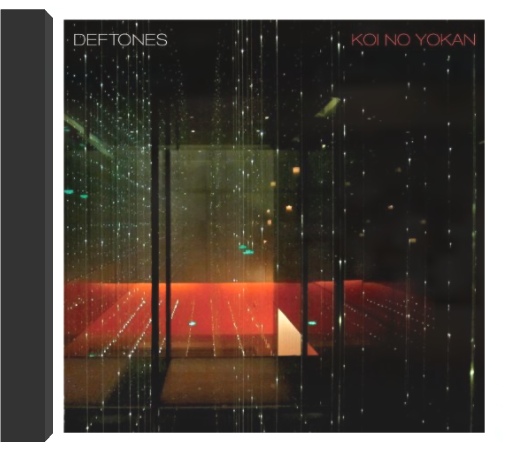
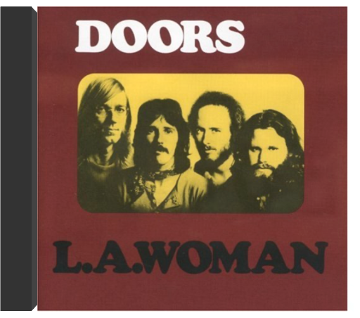

 koi no yokandeftones  1 - swerve city  l.a. womanthe doors C'est peu après la sortie de cet album que Jim Morrison s'établissait à Paris avec Pamela, espérant oublier son statut de rock-star et de sex-symbol pour mieux repartir à zéro. On connaît la suite... Dernier disque de Morrison, L.A. Woman sonne symboliquement comme une apothéose. Mais, au-delà, c'est bien d'un disque essentiel du groupe californien et du rock qu'il s'agit. Si l'intro de "Riders On The Storm" justifie à elle seule le qualificatif de chef-d'oeuvre, que dire de "The Changeling", de "Love Her Madly", de "L'America" et, bien sûr, du morceau titre ? Morrison n'a peut-être jamais aussi bien chanté et Krieger, Manzarek et Densmore (accompagnés ici par le bassiste Jerry Scheff et le guitariste Marc Benno) n'ont peut-être jamais aussi bien joué, jamais aussi finement ciselé l'esthétique Doors. Paru en 1971, L.A. Woman a reçu en France le grand prix de l'académie Charles-Cros. —Philippe Margotin |  In 'Hitsville Re-Visited', the mighty trio add a dose of uptempo funk into traditional highlife grooves.The legendary Ebo Taylor was involved in many funk and highlife records to emerge from Ghana in the 70's and 80's. He worked with bands such as Apagya Show Band, C.K. Mann as well as Pat Thomas, on this, and several other records. Taylor recorded another album with Uhuru Yenzu in 1980 - 'Conflict' - which is also available on Mr Bongo.Pat Thomas career began in 1969 with the 'Broadway Dance Band', leaving a year later to join the 'Uhuru Dance Band'. He then played with Ebo Taylor's 'Blue Monks' and finally formed the 'Sweet Beans' in 1973 where he really made his name.Thomas and Taylor's careers span more than 50 years now and they both still tour to play around the world.  Au succès populaire de "Jump Around", single enregistré en1992 avec le groupe House Of Pain, Everlast – alias Erik Schrody alias Whitey Ford – préfère désormais les plaisirs solitaires. Un premier album (certifié trois fois platine) daté de 1998, Whitey Ford Sings The Blues, boosté par le tubesque "What's It's Like", rappelait inévitablement la formule parfumée au hip-hop acoustique déposée par Beck. Mais, après un arrêt cardiaque et une participation au médiatique come-back de Santana, Everlast le survivant, renaît avec treize titres plus rock-folk-blues que rap.Eat AtWhitey's, enregistré avec une pléthore de musiciens, cultive une certaine désinvolture entre chant a cappela et violons, samples et choeurs féminins. Ce troubadour hip-hop a convié à ces agapes bluesy B-Real de CypressHill ("Deadly Assassins") et Rahzel ("Children's Story") pour accompagner des duos énergiques, N'Dea Davenport ("Love for Real" et "One&The Same") pour partager des douceurs enchanteresses et Santana ("Babylon Feeling" et "Put YourLights On") pour délivrer des accords de guitares inimitables. Bref, le deuxième acte de cet ex-membre du Rhyme Syndicate Cartel de Ice-T comporte au moins trois hits potentiels, "Whitey" "Black Jesus"et "I Can't Move," gonflés de soul car…"If It Ain't From The Art, Then It Can'tBe Art…" —Sabrina Silamo  Voilà un disque à manipuler sans aucune précautions : abus dangereux recommandé ! Proche de la scène lyonnaise dont on connaît également High Tone et Le Peuple de l'herbe, pour ce qui concerne ceux officiant dans un registre voisin, Ezekiel s'attelle à l'exploration des méandres bigrement complexes du dub. Plutôt que de se cantonner à un hommage purement "roots", au pape du genre, King Tubby, la formation recycle en sous-main de fortes influences rock, punk notamment, et c'est tant mieux. En pareille compagnie, on se surprendra à goûter l'irruption d'un accordéon musette, comme à constater la présence de Yann Tiersen au violon, esprit curieux, inventif et ouvert à tous les possibles puisqu'on l'a déjà croisé en compagnie d'autres Lyonnais de choc : ceux du combatif combo posthardcore Bästard. —Hervé Comte  Angel Dust est un excellent album qui reçut pourtant un accueil mitigé. Les aspects insolites de ce disque le rendent particulièrement fascinant. Il est guidé par la voix très particulière et les paroles parfois perturbantes de Mike Patton. "Land Of Sunshine" est un morceau entraînant ponctué par les cris hystériques de Patton. Coller l'étiquette hard-rock à Angel Dust serait trop réducteur. La musique de Faith No More est bien plus complexe. "Midlife Crisis" est teinté de funk, la ballade "RV" (confessions amères d'un homme mûr) est amère, "Smaller And Smaller" est angoissant et suffoquant et "Be Aggressive" est un titre où l'orgue est omniprésent et sur lequel les refrains sont interprétés par une chorale de majorettes. Angel Dust est un album impossible à classer mais incroyablement distrayant, alors, laissez-vous tenter. —Genevieve Williams |

Julien
Collection Total:
1 944 Items
1 944 Items
Last Updated:
Apr 16, 2022
Apr 16, 2022


 Made with Delicious Library
Made with Delicious Library